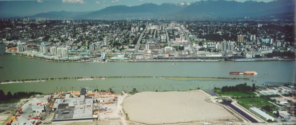

Joint Statement on the Seal Ban Challenge
Our government commends the Inuit Tapiriit Kanatami....

Nautical Charts
Heading out on the water? Ensure you have the most up-to-date nautical charts for the area where you are navigating.

Canadian Coast Guard
The Canadian Coast Guard owns and operates the federal government’s civilian fleet, and provides key maritime services to Canadians.